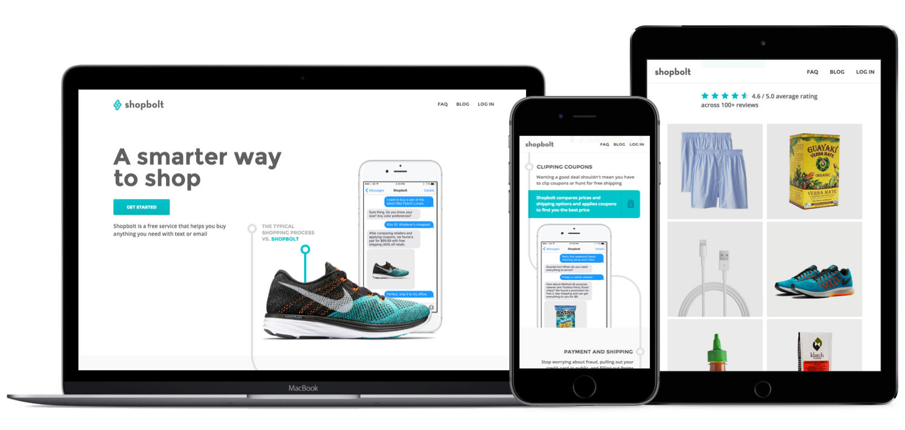
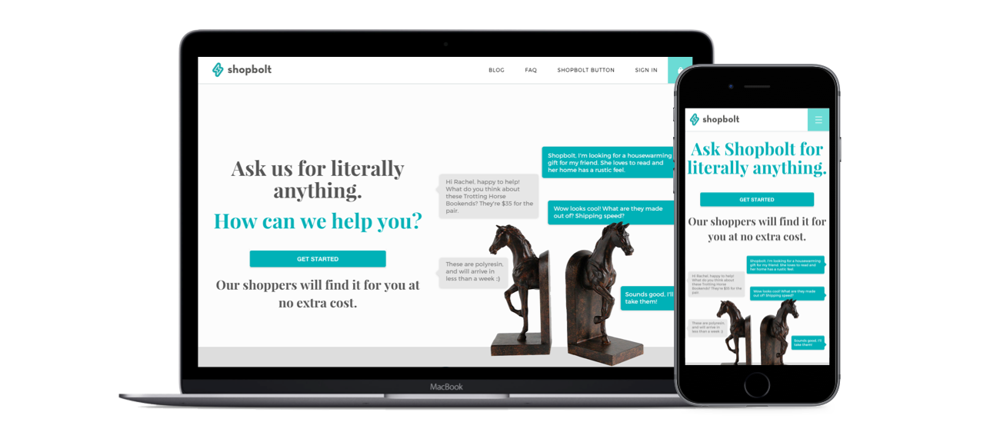
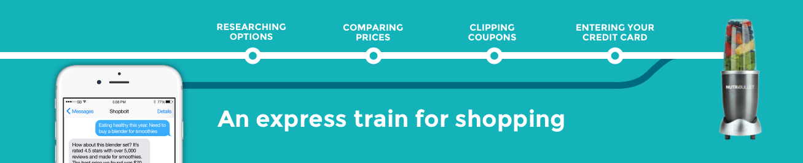
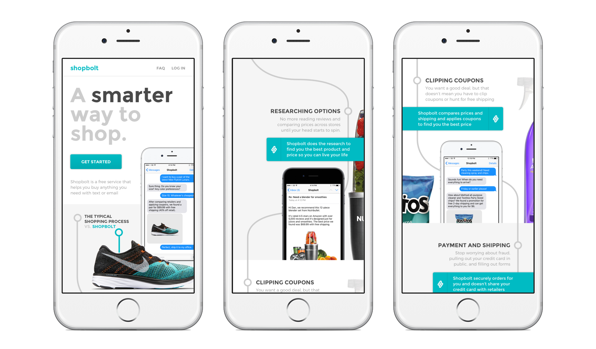
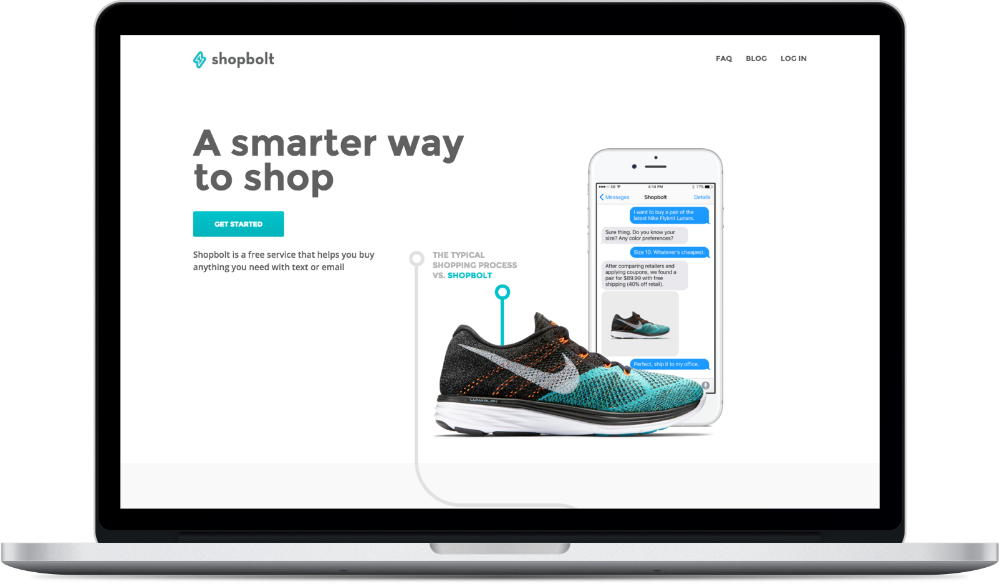
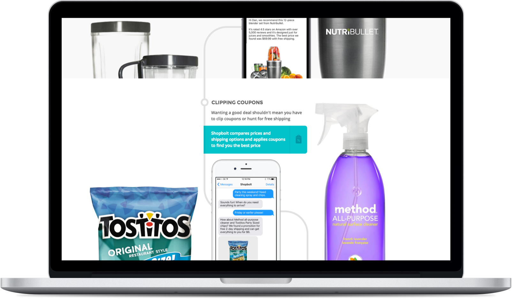
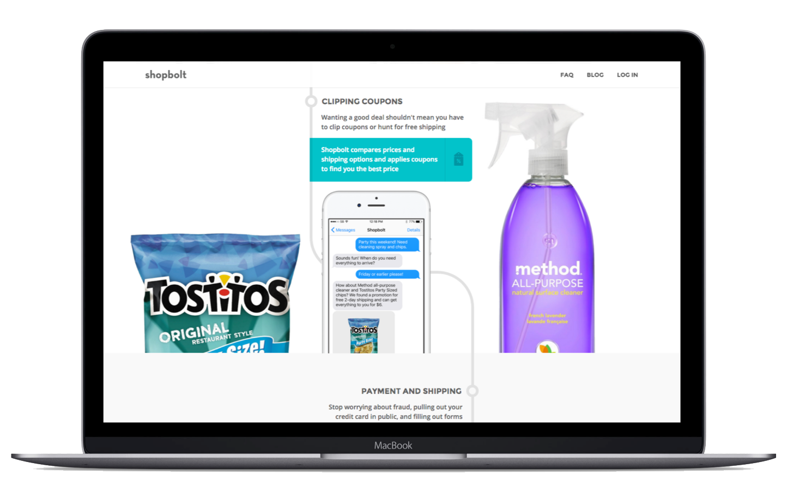
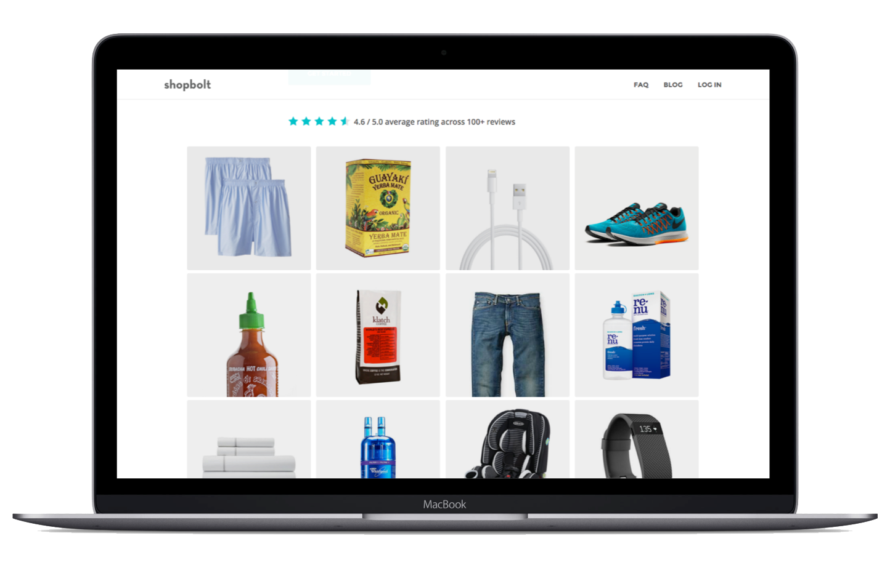

The Product
Shopbolt is a free service that helps you shop by text message or email. Just tell Shopbolt what you want and they'll take care of the research, coupon clipping, and payment for you. After your first order, Shopbolt saves your payment and shipping information and makes ordering again as seamless as having a conversation.
The result - a responsive site that addressed key user problems
The Challenge
Buying something by chat is a new experience for most shoppers. In user tests of the previous site, people had a hard time identifying specific problems that Shopbolt solved for them. Our team was challenged with prioritizing the user problems that Shopbolt solved and redesigning the homepage to better position Shopbolt to new users and increase sign-up conversion.
The Approach
We started the design process with a research phase focused on identifying the jobs to be done that users hired Shopbolt for. We interviewed a dozen existing users, analyzed order history over the past 6 months, and ran a user test on existing website. In short, we found a mismatch between how new users perceived Shopbolt and how existing users actually used and valued the product
The previous site - we found that users didn't relate to the broadness of the value proposition
Through our interviews and analysis of order data, we found that the majority of users were hiring Shopbolt to solve problems lower in their purchase funnel. A few jobs-to-be-done emerged as recurring themes: wanting to find the best price on a specific product, wanting to find the best of a specific product type (e.g. the best iphone case), wanting to reduce time spent transacting, and wanting to track down hard to find products.However, in our user tests of the existing landing page, we found that new users perceived Shopbolt as a solution that solved problems high in the purchase funnel, such as product discovery and helping to solve open-ended requests (e.g. gifts for friends or decorating a home).
The Solution
With the research in mind, we wanted to craft a landing experience that clearly showcased how Shopbolt solved the user problems we prioritized. I sketched out a few concepts and our team decided to explore one in particular - the idea of comparing the simple Shopbolt process with meandering, multi-step process of comparing products, coupon clipping, and making a transaction. 
An initial concept that formed the basis for the homepage design
I took this idea and designed a quick mobile-only version of the landing page in Sketch (50%+ of our visitors were on mobile). I made sure to highlight use-cases that were common with how existing users used Shopbolt and also to show these user cases in the familiar contexts of SMS and email. I then created a rough prototype with these designs and user tested the prototype with a handful of participants. The mobile design that we tested using a Framer prototype
We used the same questions and targeting as the test we ran on the old site and this time the reactions were very different. Testers had almost no issues with the UX and immediately articulated the jobs-to-be-done that we hoped they would. While the sample size was small, users also reacted more positively to the idea of Shopbolt and noted that they could relate to the problems Shopbolt solved. On the flip side, testers mentioned that they wanted to see more testimonials and use-cases before feeling completely comfortable giving their credit card.After the user test, I moved from Sketch to HTML/CSS/JS so that I could work on scaling the site for desktop and tablet and shaping the final deliverable (the curved lines and circle were particularly "fun" to line up and scale). I added user ratings and examples of past customer orders based on feedback from the user tests and also simplified the mobile site to improve readability based on feedback on the coded site. Next up is working with the team to update the sign-in and sign-up flow and user portal.
See the live site at shopboltnow.com    